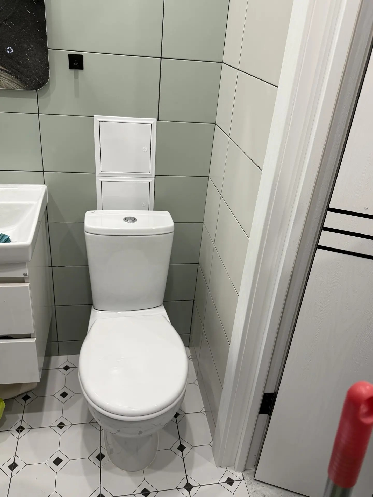

Все услуги сантехника
Полный перечень работ с подробным описанием
Выполняю любые сантехнические работы в Воронеже. Каждая услуга включает бесплатную консультацию и гарантию качества.
Водоснабжение
Монтаж, демонтаж и обслуживание систем водоснабжения любой сложности
Монтаж систем водоснабжения
Полный монтаж систем холодного и горячего водоснабжения с нуля. Включает прокладку труб, установку запорной арматуры, подключение к существующим сетям. Работаю с полипропиленовыми и металлопластиковыми трубами.
- ✅ Проектирование схемы разводки
- ✅ Подбор материалов под бюджет
- ✅ Монтаж труб и фитингов
- ✅ Установка запорных кранов
- ✅ Опрессовка и проверка герметичности

Монтаж сантехнических труб
Прокладка труб водоснабжения и канализации в квартирах, домах и коммерческих помещениях. Выполняю скрытую и открытую прокладку труб с соблюдением всех технических норм.
- ✅ Прокладка труб в стенах и полу
- ✅ Открытая прокладка с декоративными коробами
- ✅ Замена старых труб на новые
- ✅ Перенос существующих коммуникаций

Демонтаж систем водоснабжения
Полный или частичный демонтаж старых систем водоснабжения. Аккуратно снимаю трубы, арматуру и оборудование с минимальным повреждением отделки. Убираю за собой мусор.
- ✅ Демонтаж труб и стояков
- ✅ Снятие запорной арматуры
- ✅ Демонтаж сантехнических приборов
- ✅ Уборка мусора
Фото работы
Перенос труб ХВС и ГВС
Перенос существующих труб холодного и горячего водоснабжения на новое место. Выполняю при перепланировке санузлов, кухонь или при замене сантехники. Сохраняю работоспособность системы на время работ.
- ✅ Перенос точек подключения
- ✅ Удлинение или укорачивание труб
- ✅ Сохранение подачи воды во время работ
- ✅ Тестирование после переноса

Подвод к водопроводной сети
Подключение новых объектов к существующей водопроводной сети. Выполняю врезку в трубы, установку счётчиков и запорной арматуры. Работаю с центральным и автономным водоснабжением.
- ✅ Врезка в существующие трубы
- ✅ Установка счётчиков воды
- ✅ Монтаж запорных кранов
Фото работы
Проектирование, сметы
Разработка проекта водоснабжения с расчётом материалов и стоимости работ.
- ✅ Составление схемы разводки
- ✅ Расчёт количества материалов
- ✅ Смета работ и материалов
Фото работы
Канализация
Монтаж, ремонт и обслуживание канализационных систем
Монтаж канализации
Полный монтаж канализационной системы с нуля. Прокладка труб, установка ревизий, подключение сантехнических приборов. Работаю с ПВХ трубами.
- ✅ Прокладка канализационных труб
- ✅ Установка ревизионных люков
- ✅ Подключение сантехники
- ✅ Проверка герметичности
Фото работы
Прокладка канализационных труб
Прокладка новых канализационных труб при ремонте или перепланировке. Соблюдаю уклоны для самотёка, устанавливаю крепления и компенсаторы.
- ✅ Прокладка труб с правильным уклоном
- ✅ Установка креплений и хомутов
- ✅ Монтаж компенсаторов
- ✅ Теплоизоляция (при необходимости)
Фото работы
Демонтаж канализации
Полный или частичный демонтаж старой канализационной системы. Аккуратно снимаю чугунные и ПВХ трубы с минимальным повреждением конструкций.
- ✅ Демонтаж чугунных труб
- ✅ Снятие ПВХ труб и фитингов
- ✅ Демонтаж ревизий и тройников
- ✅ Уборка мусора
Фото работы
Подвод к канализационной сети
Подключение новых объектов к существующей канализационной сети. Врезка в трубы, установка переходников и уплотнений.
- ✅ Врезка в канализационную трубу
- ✅ Установка переходников
- ✅ Герметизация соединений
- ✅ Проверка работоспособности
Фото работы
Ремонт коллекторов
Ремонт и замена канализационных коллекторов. Устранение протечек, замена повреждённых участков, усиление конструкции.
- ✅ Диагностика состояния коллектора
- ✅ Устранение протечек
- ✅ Замена повреждённых участков
- ✅ Усиление конструкции
Фото работы
Отопление
Установка, демонтаж и обслуживание систем отопления
Установка радиатора отопления
Монтаж радиаторов отопления всех типов: алюминиевых, биметаллических, стальных панельных. Подключение к существующей системе с установкой запорной арматуры и терморегуляторов.
- ✅ Демонтаж старого радиатора
- ✅ Установка нового радиатора
- ✅ Монтаж запорных кранов
- ✅ Установка терморегуляторов
- ✅ Опрессовка и проверка
Фото работы
Демонтаж труб отопления
Демонтаж старых труб системы отопления. Аккуратно снимаю стальные и пластиковые трубы с минимальным повреждением отделки стен и пола.
- ✅ Демонтаж стальных труб
- ✅ Снятие пластиковых труб
- ✅ Демонтаж креплений
- ✅ Уборка мусора
Фото работы
Демонтаж радиаторов отопления
Снятие радиаторов отопления для замены или ремонта. Перекрываю подачу теплоносителя, аккуратно демонтирую радиатор с сохранением целостности труб.
- ✅ Перекрытие подачи теплоносителя
- ✅ Демонтаж радиатора
- ✅ Установка заглушек на трубы
- ✅ Подготовка к установке нового
Фото работы
Прочистка канализации и устранение засоров
Быстрое устранение засоров любой сложности профессиональным оборудованием
Устранение засора
Устранение засоров в раковинах, ваннах, душевых кабинах. Использую механические и химические методы прочистки. Работаю быстро и эффективно.
- ✅ Диагностика места засора
- ✅ Механическая прочистка
- ✅ Химическая обработка (при необходимости)
- ✅ Проверка проходимости
Фото работы
Прочистка канализации
Глубокая прочистка канализационных труб профессиональным оборудованием. Устраняю сложные засоры, жировые отложения, посторонние предметы.
- ✅ Прочистка тросом
- ✅ Гидродинамическая промывка
- ✅ Удаление жировых отложений
- ✅ Профилактическая обработка
Фото работы
Устранение засоров в сифонах
Прочистка и замена сифонов под раковинами, ваннами и душевыми кабинами. Устраняю засоры, вызванные скоплением волос, жира и мелкого мусора.
- ✅ Разборка сифона
- ✅ Очистка от загрязнений
- ✅ Замена уплотнителей
- ✅ Сборка и проверка
Фото работы
Устранение засоров в канализации
Прочистка засоров в канализационных трубах на любом участке. Работаю с трубами разного диаметра и материала.
- ✅ Локализация засора
- ✅ Прочистка тросом
- ✅ Промывка труб
- ✅ Рекомендации по профилактике
Фото работы
Устранение засора в туалете
Прочистка засоров в унитазах. Удаляю посторонние предметы, бумагу, органические отложения. Работаю аккуратно, без повреждения сантехники.
- ✅ Диагностика причины засора
- ✅ Механическое удаление
- ✅ Прочистка тросом
- ✅ Проверка слива
Фото работы
Сантехника
Установка, ремонт и демонтаж сантехнического оборудования
🔧 Установка сантехники
Установка унитаза
Монтаж унитазов всех типов: напольных, подвесных, инсталляций. Подключение к водоснабжению и канализации, настройка сливной арматуры.
- ✅ Демонтаж старого унитаза
- ✅ Установка нового унитаза
- ✅ Подключение к канализации
- ✅ Подключение к водоснабжению
- ✅ Настройка сливной арматуры

Установка смесителя
Монтаж смесителей для раковины, ванны, душа, кухни. Подключение к водоснабжению, проверка герметичности всех соединений.
- ✅ Демонтаж старого смесителя
- ✅ Установка нового смесителя
- ✅ Подключение шлангов
- ✅ Проверка на протечки
Фото работы
Установка раковины
Монтаж раковин всех типов: врезных, накладных, подвесных, с тумбой. Подключение к водоснабжению и канализации, установка сифона.
- ✅ Установка раковины на место
- ✅ Крепление к стене или тумбе
- ✅ Подключение сифона
- ✅ Подключение смесителя
Фото работы
Установка ванны
Монтаж ванн всех типов: чугунных, стальных, акриловых, гидромассажных. Установка на каркас или ножки, подключение к коммуникациям.
- ✅ Сборка каркаса (при необходимости)
- ✅ Установка ванны на место
- ✅ Выравнивание по уровню
- ✅ Подключение слива и перелива
- ✅ Герметизация швов
Фото работы
Установка душевой кабины
Сборка и установка душевых кабин всех типов. Подключение к водоснабжению и канализации, настройка функций, проверка герметичности.
- ✅ Сборка кабины по инструкции
- ✅ Установка на место
- ✅ Подключение коммуникаций
- ✅ Настройка функций
- ✅ Герметизация швов
Фото работы
Установка сифона
Монтаж сифонов под раковины, ванны, душевые поддоны. Подключение к канализации, проверка герметичности.
- ✅ Подбор сифона под сантехнику
- ✅ Установка сифона
- ✅ Подключение к канализации
- ✅ Проверка на протечки
Фото работы
Установка водосчётчика
Монтаж счётчиков холодной и горячей воды. Установка с соблюдением требований ресурсоснабжающих организаций, пломбировка.
- ✅ Подбор счётчика по требованиям
- ✅ Установка на трубы
- ✅ Установка фильтров
- ✅ Подготовка к пломбировке
Фото работы
Установка шарового крана
Монтаж шаровых кранов на трубы водоснабжения и отопления. Установка запорной арматуры для перекрытия подачи воды.
- ✅ Врезка крана в трубу
- ✅ Установка уплотнений
- ✅ Проверка герметичности
- ✅ Тестирование работы
Фото работы
🛠️ Ремонт сантехники
Устранение протечки
Быстрое устранение протечек в трубах, соединениях, сантехнических приборах. Нахожу источник протечки и устраняю причину.
- ✅ Диагностика места протечки
- ✅ Устранение причины
- ✅ Замена уплотнений
- ✅ Проверка герметичности
Фото работы
Ремонт смесителя
Ремонт смесителей всех типов: устранение протечек, замена картриджей, кран-букс, прокладок. Восстановление работоспособности без замены всего смесителя.
- ✅ Разборка смесителя
- ✅ Диагностика неисправности
- ✅ Замена изношенных деталей
- ✅ Сборка и проверка
Фото работы
Ремонт унитазов
Ремонт унитазов: устранение протечек, замена арматуры, настройка сливного механизма. Работаю с унитазами всех типов.
- ✅ Диагностика неисправности
- ✅ Замена арматуры
- ✅ Настройка слива
- ✅ Устранение протечек
Фото работы
Ремонт инсталляции
Ремонт инсталляций для подвесных унитазов: замена арматуры, устранение протечек, настройка механизма слива.
- ✅ Доступ к инсталляции
- ✅ Диагностика неисправности
- ✅ Замена деталей
- ✅ Настройка и проверка
Фото работы
Ремонт сливов душевых кабин
Ремонт сливных механизмов душевых кабин: замена сифонов, устранение протечек, прочистка засоров.
- ✅ Диагностика слива
- ✅ Замена сифона
- ✅ Устранение протечек
- ✅ Проверка работоспособности
Фото работы
Замена гофры унитаза
Замена гофрированной трубы, соединяющей унитаз с канализацией. Устранение протечек и неприятных запахов.
- ✅ Демонтаж старой гофры
- ✅ Установка новой гофры
- ✅ Герметизация соединений
- ✅ Проверка на протечки
Фото работы
🔨 Демонтаж сантехники
Демонтаж раковины
Аккуратный демонтаж раковины с сохранением целостности стен и коммуникаций. Отключение от водоснабжения и канализации.
- ✅ Отключение от коммуникаций
- ✅ Демонтаж раковины
- ✅ Заглушка труб
- ✅ Уборка места
Фото работы
Демонтаж унитаза
Демонтаж унитаза с отключением от водоснабжения и канализации. Аккуратное снятие без повреждения пола и стен.
- ✅ Отключение от коммуникаций
- ✅ Демонтаж унитаза
- ✅ Заглушка канализации
- ✅ Уборка места
Фото работы
Демонтаж смесителя
Снятие смесителя с раковины, ванны или душа. Отключение от водоснабжения, заглушка труб.
- ✅ Отключение от водоснабжения
- ✅ Демонтаж смесителя
- ✅ Заглушка труб
- ✅ Подготовка к установке нового
Фото работы
Демонтаж ванны
Демонтаж ванны всех типов: чугунной, стальной, акриловой. Отключение от коммуникаций, аккуратное снятие.
- ✅ Отключение от коммуникаций
- ✅ Демонтаж ванны
- ✅ Разборка (при необходимости)
- ✅ Уборка места
Фото работы
Демонтаж душевых кабин
Разборка и демонтаж душевых кабин. Отключение от коммуникаций, аккуратное снятие поддона и стенок.
- ✅ Отключение от коммуникаций
- ✅ Разборка кабины
- ✅ Демонтаж поддона
- ✅ Уборка места
Фото работы
Демонтаж инсталляции
Демонтаж инсталляции для подвесного унитаза. Снятие с креплениями, отключение от коммуникаций.
- ✅ Отключение от коммуникаций
- ✅ Демонтаж унитаза
- ✅ Снятие инсталляции
- ✅ Заглушка труб
Фото работы
🚨 Аварийный вызов
Аварийный вызов сантехника
Срочный выезд сантехника при аварийных ситуациях: прорыв труб, сильная течь, засор канализации. Приезжаю в течение часа.
- ✅ Приезд в течение часа
- ✅ Быстрое устранение аварии
- ✅ Временные решения до полного ремонта
Фото работы
Техника и оборудование
Подключение бытовой техники и монтаж сантехнического оборудования
Установка водонагревателя
Монтаж водонагревателей (бойлеров) всех типов: накопительных, проточных. Подключение к водоснабжению, установка предохранительной арматуры.
- ✅ Выбор места установки
- ✅ Крепление бойлера
- ✅ Подключение к водоснабжению
- ✅ Установка предохранительного клапана
- ✅ Первый запуск и проверка

Монтаж полотенцесушителя
Установка полотенцесушителей всех типов: водяных, электрических, комбинированных. Подключение к системе горячего водоснабжения или отопления.
- ✅ Выбор места установки
- ✅ Крепление к стене
- ✅ Подключение к коммуникациям
- ✅ Установка кранов Маевского
- ✅ Проверка герметичности

Подключение стиральной машины
Подключение стиральных машин к водоснабжению и канализации. Установка фильтров, подключение слива, первый запуск и проверка.
- ✅ Подключение к водоснабжению
- ✅ Подключение слива к канализации
- ✅ Установка фильтра
- ✅ Первый запуск и проверка
Фото работы
Подключение посудомоечной машины
Подключение посудомоечных машин к водоснабжению и канализации. Установка фильтров, подключение слива, настройка и проверка.
- ✅ Подключение к водоснабжению
- ✅ Подключение слива
- ✅ Установка фильтра
- ✅ Первый запуск и проверка
Фото работы
Установка насоса
Монтаж насосов для повышения давления воды, циркуляционных насосов для отопления. Подключение к системе, настройка и проверка.
- ✅ Выбор места установки
- ✅ Монтаж насоса
- ✅ Подключение к системе
- ✅ Настройка и проверка
Фото работы
Установка фильтра очистки воды
Монтаж фильтров для очистки воды: проточных, обратного осмоса, магистральных. Подключение к водоснабжению, замена картриджей.
- ✅ Подбор фильтра под задачи
- ✅ Монтаж фильтра
- ✅ Подключение к водоснабжению
- ✅ Промывка и первый запуск
Фото работы
Монтаж дополнительных систем очистки воды
Установка дополнительных систем фильтрации: умягчителей, обезжелезивателей, УФ-стерилизаторов. Комплексные решения для чистой воды.
- ✅ Анализ воды (рекомендации)
- ✅ Подбор оборудования
- ✅ Монтаж системы
- ✅ Настройка и запуск
Фото работы
Установка измельчителя отходов
Монтаж измельчителей пищевых отходов (диспоузеров) под раковину. Подключение к канализации и водоснабжению, проверка работы.
- ✅ Установка под раковину
- ✅ Подключение к канализации
- ✅ Подключение к водоснабжению
- ✅ Первый запуск и проверка
Фото работы
Нужен сантехник в Воронеже?
Позвоните прямо сейчас и получите бесплатную консультацию по вашей задаче